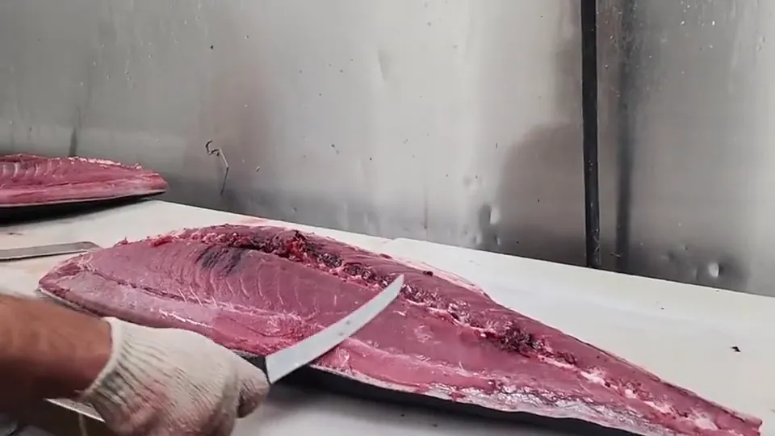

Cold-chain protocols from dock to delivery.
LA, San Diego & Inland Empire routes.
323-582-8003 — real people, fast quotes.
AAA International Seafood has been a trusted wholesale seafood purveyor based in Vernon, CA since 2007, supplying restaurants and sushi bars with sushi-grade tuna and fresh, frozen seafood across Southern California.
A sampling of the dock-fresh, sushi-grade seafood we deliver daily. See the full catalog on our Products page.


Speak with our sales team to set up delivery for your restaurant, market, or business.